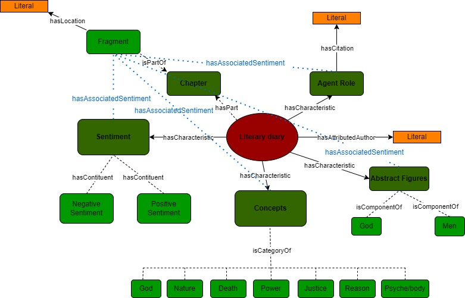

Domain and Scope
The work of Marcus Aurelius and its place in the philosophical school of Stoicism has for centuries been the subject of scholarly activity. One can argue, however, that antique philosophical concepts have been studied too much in their objective meanings and implications, without considering enough the humans behind them, in all of their individualities and perhaps even, personalities.
We believe that understanding the subjective perspectives of philosophers is key for grasping the concepts and themes they work on and build upon - that is, the way these general outlooks contribute in shaping concepts in certain ways. We can do this by inscribing their corresponding themes in certain sentiments about them, from positive to negative.
As such, we decided to work on Marcus Aurelius’ book Meditations, rich in both concepts and sentiments, to produce a linguistic and sentiment analysis ontology of his writings. What better work indeed to deal with this problem, than that of the most popular stoic philosopher, concerned before anything else about dealing with human emotions, and on providing a general system of “ethics” concerning them - a way of living, spiritual exercises, therapeutics?[1]
1. https://plato.stanford.edu/entries/stoicism/ ↩
Conceptual Map
This is the initial conceptual map we used to visualize our classes and properties
